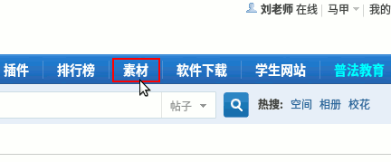
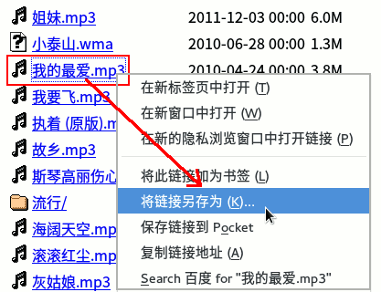
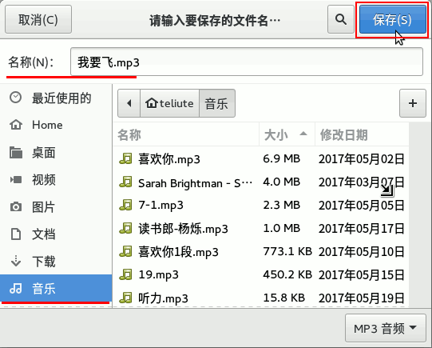
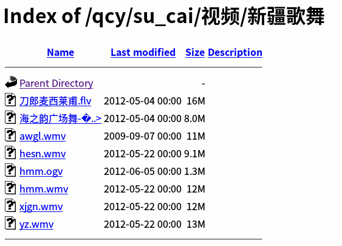

第4课 学会下载分类文件
0、笔记、指法、日志（变色卡）、范例；
1、相册，随便看看，左下角点“查看原图”，
2、在图片上点右键，选“将图像另存为..”；
3、接下来，名称改为 11a ，小数点后面第不要动，
左边选择图片文件夹，右上角点“保存”；
4、关闭这个标签，重新打开一张图片，同样保存为11b；
5、关闭图片，新标签，点“素材”链接；

6、再点 music ，选择一首mp3歌曲，瞄准点右键，链接另存为；

7、保存到“音乐”文件夹里，文件名不用修改，用原来的就可以了；

9、关闭标签页，重新进素材，视频，新疆歌舞；

10、下载两个到视频文件夹，视频文件一般比较大； 依次点开视频、图片、音乐，查看里面下载第文件；
本节学习了的基础知识，如果你成功地完成了练习，请继续学习下一课内容；
返回目录 下一课
本教程由TeliuTe制作|著作权所有
基础教程网：http://teliute.org/
美丽的校园……
转载和引用本站内容，请保留作者和本站链接。